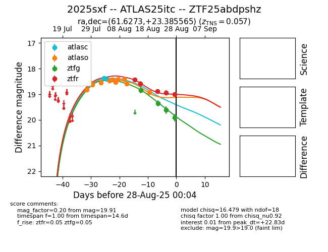

Target 2025sxf at 2025-08-27 10:07, see:
FINK: fink-portal.org/ZTF25abdpshz
Lasair: lasair-ztf.lsst.ac.uk/objects/ZTF25abdpshz
ALeRCE: alerce.online/object/ZTF25abdpshz
TNS: wis-tns.org/object/2025sxf
YSE: ziggy.ucolick.org/yse/transient_detail/2025sxf
alt names
ZTF25abdpshz (ztf,fink)
2025sxf (tns,yse)
ATLAS25itc (atlas)
coordinates:
equatorial (ra, dec) = (61.6273,+23.38556)
galactic (l, b) = (170.5860,-20.94233)
photometry
last atlasc=18.41, atlaso=18.92, ztfg=19.61, ztfr=18.93
2 atlasc, 11 atlaso, 3 ztfg, 4 ztfr detections
